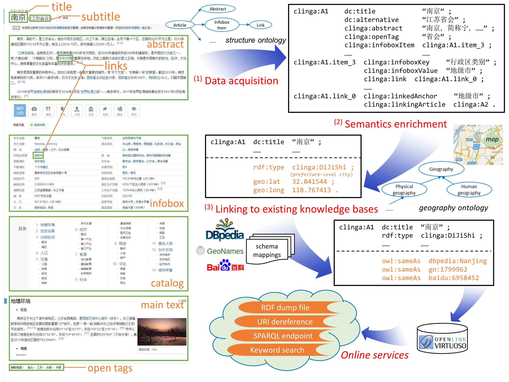

Wei Hu*, Haoxuan Li, Zequn Sun, Xinqi Qian, Lingkun Xue, Ermei Cao, Yuzhong Qu. Clinga: Bringing Chinese Physical and Human Geography in Linked Open Data. In: ISWC, 104-112, 2016
While the geographical domain has long been involved as an important part of the Linked Data, the small amount of Chinese linked geographical data impedes the integration and sharing of both Chinese and cross-lingual knowledge. In this paper, we contribute to the development of a new Chinese linked geographical dataset named Clinga, by obtaining data from the largest Chinese wiki encyclopedia. We manually design a new geography ontology to categorize a wide range of physical and human geographical entities, and carry out an automatic discovery of links to existing knowledge bases. The resulted dataset contains over half million Chinese geographical entities and is open access.
While the geographical domain has long been involved as an important part of the Linked Data, the small amount of Chinese linked geographical data impedes the integration and sharing of both Chinese and cross-lingual knowledge. In this paper, we contribute to the development of a new Chinese linked geographical dataset named Clinga, by obtaining data from the largest Chinese wiki encyclopedia. We manually design a new geography ontology to categorize a wide range of physical and human geographical entities, and carry out an automatic discovery of links to existing knowledge bases. The resulted dataset contains over half million Chinese geographical entities and is open access.
Methodologies

- We obtain our data from Baidu Baike, the largest collaboratively-built Chinese wiki encyclopedia. Both structural data and textual description (e.g. in main text) of an article are extracted and translated to RDF using our structure ontology, to achieve the completeness of the article at our best effort.
- We manually design a physical and human geography ontology to categorize various geographical entities. Following the Chinese naming conventions, we combine the type-based heuristic rules and an SVM classifier to obtain good categorization accuracy.
- We link Clinga to existing knowledge bases like DBpedia and GeoNames. An automatic discovery of entity links is conducted based on bilingual (Chinese and English) labels and manually-defined ontology mappings.